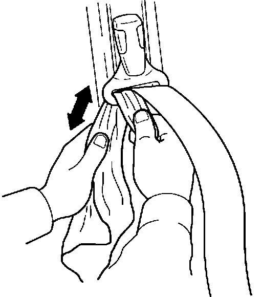

Seat Belt Slow to Retract
9213acura01
YEAR
ALL
MODEL
ALL
VIN APPLICATION
ALL with THREE-POINT
ACTIVE SEAT BELTS
January 20, 1992
BULLETIN NO.
91-050
Seat Belt Slow to Retract (Supersedes 91-050, "Seat Belt Does Not Fully Retract", dated November 18, 1991)
SYMPTOM
The seat belt will not retract all the way, or retracts slowly.
PROBABLE CAUSE
Dirt on the seat belt webbing and guide.
CORRECTIVE ACTION
Clean the seat belts and guides with a mild soap solution. This procedure applies only to three-point active seat belts. Do not use it for motorized passive seat belt systems.
1. Prepare a cleaning solution of 5 ounces of mild dishwashing liquid mixed with a gallon of warm water.
NOTE: Do not use strong cleaning solutions, upholstery cleaners, or commercial automotive interior cleaners. They can affect the durability of the webbing.

2. Soak a clean cloth in the solution. Insert the cloth between the seat belt and the metal loop on the upper anchor. Use a credit card or similar item to help insert the cloth into the loop. Work the cloth back and forth to clean the dirt out of the inside of the loop.
3. Pull the seat belt out fully. Soak a clean cloth in the solution and clean both sides of the seat belt webbing. Dry the webbing thoroughly with a clean cloth. Do not use a hair dryer or similar device.
4. Test the belt for proper retraction by pulling the latch plate down to the car's floor and then releasing it. The belt should retract fully in three seconds or less.
WARRANTY CLAIM INFORMATION
This procedure is covered by the lifetime Seat Belt Limited Warranty.
Operation number: Left: 854071
Right: 864071
Flat rate time: 0.5 hour/side
Failed P/N: 818A3-SK7-A23ZA
Defect code: 011
Contention code: B99